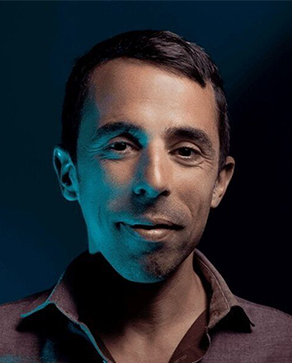
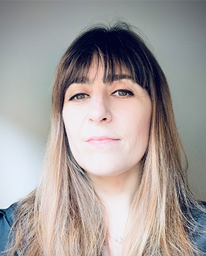
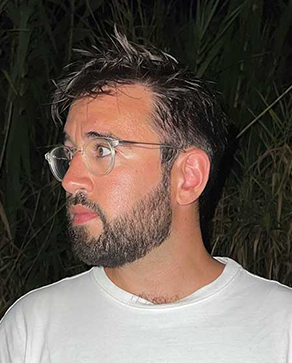
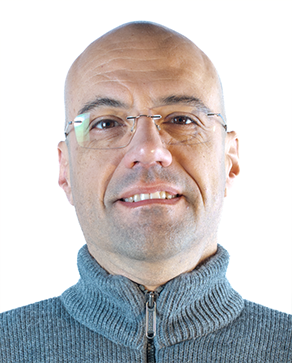
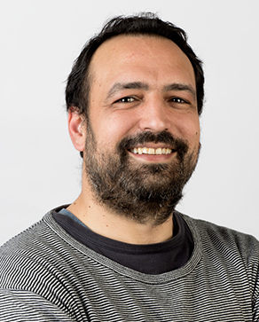
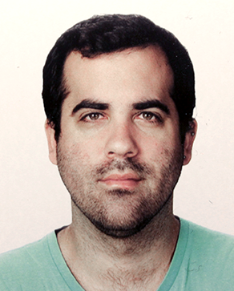

João Sousa Cardoso
Course Director / PhD in Social Sciences — Filmmaker and Visual ArtistFeatured Works:
- Theatre director of A Ronda da Noite based on Agustina Bessa Luís at Fundação Calouste Gulbenkian in 2022, and Sequências Narrativas Completas, based on Álvaro Lapa, premiered at Teatro Nacional D. Maria II in 2019.
- Director of the film Na Selva das Cidades, with André Sousa, based on Bertolt Brecht, filmed in São Paulo (Brazil) in 2017, and A Santa Joana dos Matadouros, based on Bertolt Brecht, at Cinemateca Portuguesa (2024).
- Author of the books TEATRO EXPANDIDO! (2016), Sequências Narrativas Completas and A Espanha das Espanhas, both in 2020.

João Alves de Sousa
Deputy Course Director / PhD in Interactive Arts — Game Designer, 2D Animator, Graphic DesignerFeatured Works:
- Free that Fish (video game presented at Comic Con Portugal, Lisbon Games Week and The Very Big Indie Pitch - Pocket Gamer Connects London, 2015).
- Lots of Guts (Winner of Most Innovative Game, PlayStation Portugal Awards 2015).
- Porquê (Animation, Winner of the Young Portuguese Filmmaker Award – Cinanima 2006).

Andreia Pinto de Sousa
PhD in Information and Communication — Interaction Designer and UXFeatured Works:
- Sousa Andreia and Pereira, Ana Sofia and Taborda Célia and Cerqueira Carla and Drofa Irina de. 2026. ‘A Cartography of Portuguese Feminisms: Memory as Resistance, Mapping as Mobilisation’. In HCI International. Springer Nature Switzerland.
- Giesteira, Bruno, Tainá Souza, Andreia Sousa, Liliana Rodrigues, and Guilherme Vila Maior. 2026. ‘Ikigai Play: Towards an Ikigai Paradigm of Healthy and Active Ageing in Europe’. In Reshaping Health Promotion and Disease Prevention Through Digital Innovation. IGI Global Scientific Publishing.
- Sousa, A. P. de, T. Freitas, J. Karnikowski, et al. 2025. ‘Designing for Engagement: A Co-Created VR Game for Upper Limb Rehabilitation’. 2025 IEEE Conference on Games (CoG).

Eduardo Magalhães
Sound DesignerFeatured Works:
- Oktoberfest VR (Winner of the AUREA AWARDS 2026 in the immersion category).
- Oktoberfest VR (Finalist at the XR Awards - AIXR 2026 in the best game of the year category).
- Beneath (Notable nomination for Game of the Year at the Spotlight Awards 2025 and featured at the Horror Game Awards 2025).

Hugo Barbosa
Computer Engineer, Systems Analyst and AdministratorFeatured Works:
- Systems Administrator (Microsoft Windows networks, Linux and Mac OS X networks).
- Database Analyst and Manager: MySql, Oracle, Microsoft SQL Server.
- Researcher in Serious Games, Virtual Reality, Simulation, Player Adaptivity, Cybersecurity and Computer Networks.

Igor Ramos
PhD in Design — Graphic DesignerFeatured Works:
- Responsible since 2017 for all graphic communication (print and online) at Cinema Trindade.
- Founder of the Cartaz de Cinema Português project (cartazdecinemaportugues.pt).
- Freelance graphic designer specialising in cinema, collaborating with filmmakers, production companies and distributors on projects such as Países da Oublaum Filmes, Caronte by Tânia Gomes Teixeira, and 18 Buracos para o Paraíso by João Nuno Pinto.

Manuel Santos Maia
Specialist in Contemporary Art — Visual Artist and CuratorFeatured Works:
- Curator at Bienal da Maia, Bienal de Cerveira, Bienal de Estremoz, Galeria Quadum, Galeria Municipal do Porto, and Cinema Batalha. Curated film cycles and performance exhibitions.
- Artistic Director of Espaço Campanhã (2008-2009) and Espaço MIRA (since 2013).
- Member of the Education Service team at Serralves Museum of Contemporary Art (2000-2021) and Culturgest Porto.

José Raimundo
PhD in Digital Media – Interactive Content — Illustrator and 3D ArtistFeatured Works:
- Coordinator of the international project Virtual Production Studio Networks.
- The case of See, Hear, Touch no Evil and Bully Who? Board/digital games (DIGICOM 2018 and 2019).
- Second place at the 4th International Illustration Competition, Treviso, Italy (2016).

Pedro Flores
PhD in Performing Arts and Moving Image — Director and ScreenwriterFeatured Works:
- Listening to the Silences (2009), Director. Selected for international festivals including IDFA, Busan, Bilbao, Vila do Conde, AFI Silverdocs, Visions du Reel, and Kassel. Best Film – Reggio FF 2009; Best Documentary – Magma ISFF 2009; Best Short – Isle of Man FF; Best Documentary – Faial FF 2009.
- Cinzas, Ensaio sobre o Fogo (2012), Director. Selected for Cineport, Del Popoli, Traces de Vie, Go Short, Huesca and DocLisboa, among others.
- Pedro e Inês (2018), Original Screenplay. Most-watched Portuguese film of 2018. Best Film – Fantastic Awards 2019.

Rodrigo Carvalho
PhD in Digital Media — Designer and Interactive New Media ArtistFeatured Works:
- 30xN - Audiovisual Performance (SÓNAR, Istanbul; GNRATION, Braga; SERRALVES, Porto; CONVENTO SÃO FRANCISCO, Coimbra; 2024-2026).
- Vanishing Quasars - Audiovisual Performance (ELECTROALTERNATIVE, Toulouse; FOTONICA, Rome; CRIATECH, Aveiro; 948MERKABA, Pamplona; MAPPING FESTIVAL, Geneva; VOLUMENS DAY, Valencia; SÓNAR, Lisbon; 2019-2023).
- Future Sound of Aveiro (nomination for individual interactive experience award, 2020 CITIC Press Lightening Selection, China).

Susana Chiocca
PhD in Contemporary Art — Visual Artist and PerformerFeatured Works:
- Solo Exhibitions: Soluços Sussurros Labaredas, Espaço Mira, Porto (2023); O regresso à vida do desenho, Galeria do Sol, Porto (2019).
- BITCHO - Author of this performative project combining video and music (since 2012).
- Artistic works featured in the Portuguese State Contemporary Art Collection and the Porto Municipal Art Collection.

Marco Ferreira
Producer and Director of PhotographyFeatured Works:
- A Esperança está onde menos se espera (Assistant Director and Producer, feature film by Joaquim Leitão).
- Sweet Valentine (Assistant Director and Producer, feature film by Emma Luchini).
- Renault, Peugeot, Nestlé (Assistant Director and Producer for advertising spots, Filmes Tejo).

Nuno Bernardo
Screenwriter, Director and ProducerFeatured Works:
- Gabriel (Feature film premiered at Locarno Film Festival 2018).
- Pianista (Feature film presented at Motelx 2025).
- Sofia's Diary (Series broadcast in over 30 countries, Sony Pictures Television).

Vanessa Rodrigues
PhD in Communication Studies for Development — Director, Screenwriter and Visual ArtistFeatured Works:
- Director and Screenwriter: O Feitiço de Areia (82', Portugal/Mozambique, 2025), documentary film: in distribution (2026).
- Director, Producer and Screenwriter: Baptismo de Terra (90', Portugal/Brazil, 2015), documentary film (Special Mention at Avanca Film Festival, 2017; Best Soundtrack – Terres/Spain, 2018; Best Cinematography – Hollywood Women's Film Festival, 2019).
- Director and Screenwriter: Palestina, Diários de um lugar incerto (37', West Bank/Jordan, 2013), TSF audio-documentary (Honourable Mention, UNESCO Prize – Journalism, Integration & Human Rights).